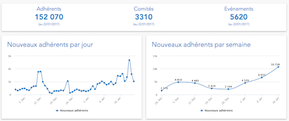

Dynamique des adhérents En Marche
Des graphiques pour montrer les dynamiques des nouveaux adhérents du mouvement En Marche et des Insoumis
Réalisé par @achauve
Nous répertorions ici les visualisations de données intéressantes sur le mouvement En Marche !
Des graphiques pour montrer les dynamiques des nouveaux adhérents du mouvement En Marche et des Insoumis
Réalisé par @achauve